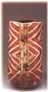

| Madhvi Subrahmanian
Indian studio potter.

Madhvi
Subrahmanian is an Indian studio potter resident in the
USA. She trained with Ray
Meeker and Deborah
Smith at the Golden Bridge Pottery in Pondicherry in 1985
and established her first studio in Mumbai that same year. In 1989
she went to the USA, where she earned an MFA from the Southern Methodist
University in Dallas, Texas in 1993. In the 1990s she also worked
with prominent American ceramists Val Cushing, Warren Mckenzie,
William Daley, Peter Beasecker and others.
After
moving to Frankfurt, Germany with her husband in 1995, she returned
to India, making her characteristic coil-built earthenware forms
finished with terra sigillata and glazed surfaces. Since then she
has returned to the USA and now lives and works in Princeton, New
Jersey.
Subrahmanian draws inspiration drawn from natural forms representing
fertility and abundance, which are often paralleled in ancient artifacts
and contemporary art.

Artist's Statement
Most
of my work in clay is built by layering coil over coil, with the
form spiraling upward in a rhythm which is quiet and slow but not
too different from the potter's wheel. The mark of the hand and
the holes left behind by layering the coils leave a trace on the
skin of the pot and give it a texture. The forms I am compelled
to make repeatedly and explore sculpturally revolve around the theme
of the container - one that holds, protects, and nurtures. The container
oRen transforms into a pod, a seed, a shell and rests, finding its
home in shallow plates and wide bowls. At other times the seed manifests
itself on the surface shinning through as gleaming eyes enshrined
into the just cut fruit. Working on the surface, I layer slips and
glazes, firing each piece several times striving towards achieving,
that effect of time often found on eroded landscapes.
More Artists of the Week
More Articles
|

{kind=link}
{kind=link}
{kind=link}
{kind=link}